Casita de Romila es un sistema de gestión pensado para una panadería y cafetería familiar. Reúne en una sola aplicación las tareas diarias del negocio:
Ventas por punto de venta (POS) con distintos métodos de pago: efectivo, Biopago, pago móvil, PDV y venta a crédito.
Comandas: pedidos a cocina que se montan, se entregan por unidades y se convierten en venta al cobrarse.
Inventario, producción, mermas y consumo interno.
Control de clientes con crédito y abonos.
Tasa de cambio del día (BCV, paralelo u otro origen).
Reportes de ventas, mermas, margen, producción vs ventas, entre otros.
Usuarios y roles para repartir responsabilidades.
Los precios se muestran en bolívares (Bs) calculados a partir de un precio base en dólares (USD) multiplicado por la tasa del día. Este manual explica, paso a paso, cómo usar cada pantalla.
Nota sobre los datos de este manual: las imágenes fueron generadas con una base de datos de demostración. Los nombres de productos, clientes, ventas y montos son ficticios y solo sirven de ejemplo.
2. Acceso al sistema
Para entrar al sistema necesitas un usuario y una contraseña que te haya asignado el administrador. El acceso se hace por nombre de usuario (no por correo).
2.1 Iniciar sesión
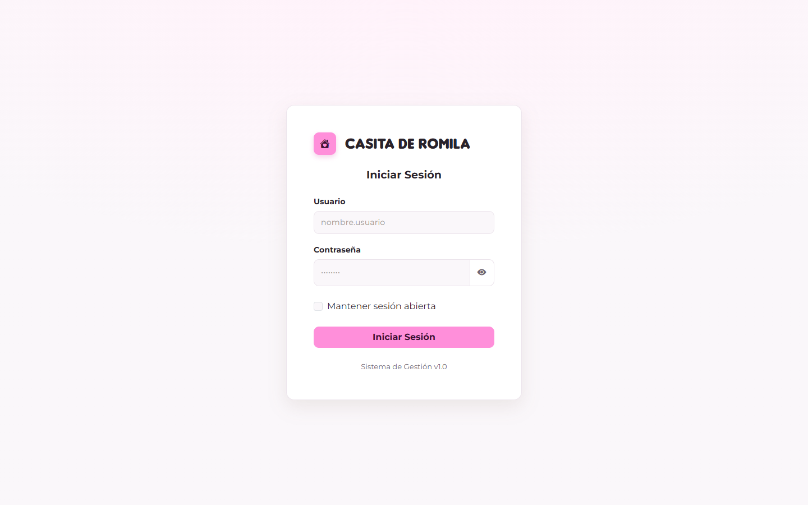
Figura 1. Pantalla de inicio de sesión.
Abre el sistema en el navegador (por ejemplo http://127.0.0.1:8008).
Escribe tu Usuario (ej. admin).
Escribe tu Contraseña. Puedes usar el icono del ojo para ver lo que escribes.
Marca “Mantener sesión abierta” si quieres que el sistema te recuerde en ese equipo.
Pulsa Iniciar Sesión.
2.2 Errores al iniciar sesión
Usuario o contraseña incorrectos: revisa que el usuario esté bien escrito y que la contraseña no tenga Mayúsculas activadas.
“Demasiados intentos. Intenta de nuevo en X segundos”: después de 5 intentos fallidos el sistema bloquea temporalmente. Espera ese tiempo y vuelve a intentar.
“Tu cuenta está inactiva. Contacta al administrador”: el administrador desactivó tu usuario; contacta a la persona encargada.
2.3 Cerrar sesión
Busca tu nombre en la barra superior y pulsa Salir. También puedes cerrar la ventana del sistema: el lanzador cierra la sesión automáticamente.
Importante: no compartas tu usuario con compañeros. Cada venta queda registrada con el usuario que la hizo, y ciertas opciones (anular ventas, ver reportes, gestionar usuarios) dependen de tu rol.
3. Pantalla principal (Dashboard)
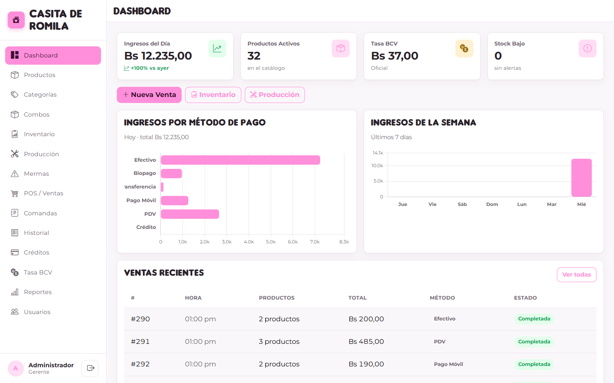
Figura 2. Panel principal (dashboard).
Al entrar, aparece el resumen del día. La barra lateral izquierda permite navegar a todas las secciones.
Indicadores (KPIs): ingresos de hoy, ventas del mes, consumo interno acumulado, entre otros.
Gráficos: ventas recientes y actividades del día.
Accesos rápidos: botones directos a las tareas más comunes (nueva venta, nueva comanda, registrar merma, etc.).
El menú lateral muestra solo lo que puedes usar según tu rol. Si no ves una opción, es porque tu perfil no incluye ese permiso.
4. Punto de venta (POS)
Es la pantalla para cobrar en el mostrador: eliges productos, defines el método de pago y confirmas la venta.
4.1 Agregar productos al carrito
Usa las categorías de la parte superior izquierda o el buscador para filtrar los productos.
Haz clic en la tarjeta de un producto para agregarlo. Los productos marcados Combo agregan todos sus componentes de una vez.
En el carrito (columna derecha) puedes sumar/restar unidades con los botones − y +, o quitar el producto con el icono de la papelera.
Usa Vaciar carrito para empezar de nuevo.
4.2 Elegir método de pago y cobrar
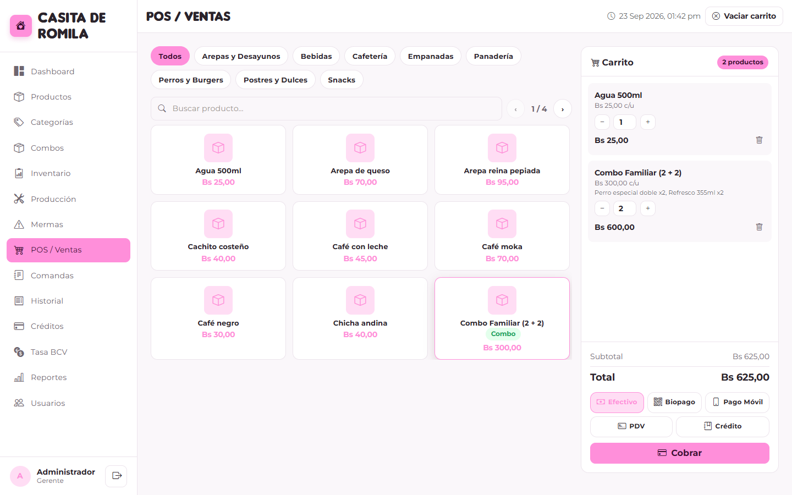
Figura 3. Punto de venta con dos productos y un combo en el carrito.
Selecciona el método de pago: Efectivo, Biopago, Pago Móvil, PDV o Crédito.
Si eliges Crédito, se desplegará el campo Cliente: selecciona quién recibe la venta a crédito.
Pulsa Cobrar. Se abre una ventana con el resumen de la venta (productos, cantidades y total).
Revisa los datos y pulsa Confirmar venta.
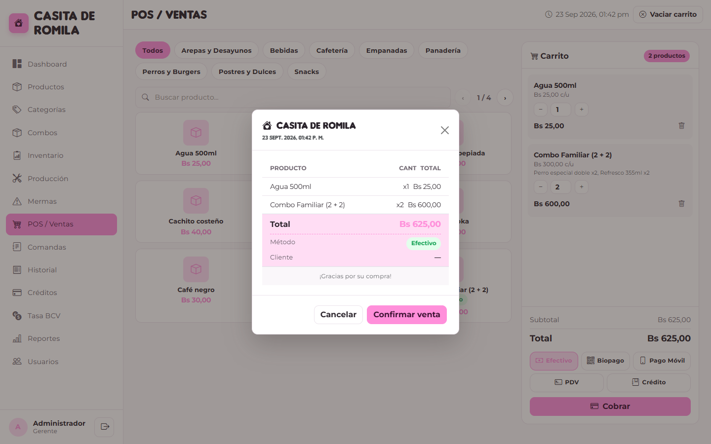
Figura 4. Resumen de la venta antes de confirmar.
Si la venta fue a crédito, el mensaje final dirá “Crédito registrado” y el saldo del cliente quedará pendiente (ver sección de Créditos).
Las ventas descontarán stock de los productos tipo inventariable. Los de tipo demanda (se hacen bajo pedido) no descuentan existencias.
Consejo: el sistema recalcula el precio desde la base de datos en el momento de pagar, usando la tasa vigente. No es necesario memorizar precios: el carrito muestra el total al instante.
5. Comandas (pedidos a cocina)
Las comandas organizan los pedidos de la noche: la recepcionista monta el pedido, la cocina entrega los productos (puede ser de a uno) y al cobrar se genera automáticamente una venta real.
5.1 Lista de comandas
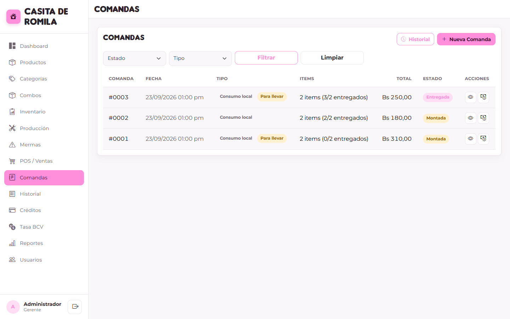
Figura 5. Listado de comandas activas del día.
La lista muestra la comanda activa del día con su estado: Montada, Entregada o Cobrada.
Filtra por Estado o por Tipo (Delivery, Consumo local, Para llevar).
Pulsa Historial para ver comandas ya cerradas.
5.2 Crear una comanda
Pulsa Nueva Comanda.
Elige el tipo de cada producto: Consumo local (local), Para llevar (para_llevar) o Delivery.
Agrega los productos y cantidades (igual que el POS).
Para pedidos delivery puedes escribir el nombre del cliente; estos se cobran por adelantado.
Guarda la comanda. El número es correlativo del día (0001, 0002…).
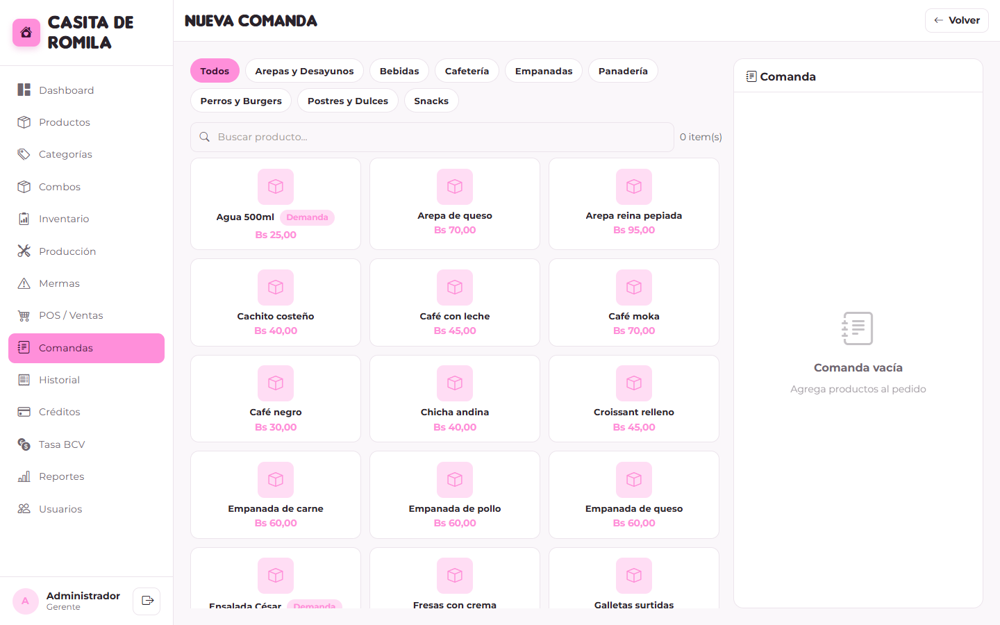
Figura 6. Formulario para armar una comanda.
5.3 Detalle, entrega y cobro
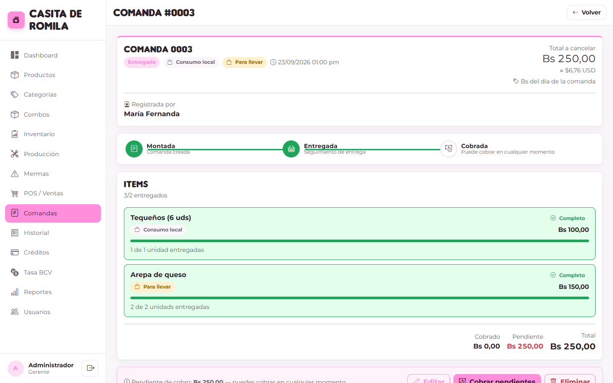
Figura 7. Detalle de una comanda: entrega por unidades y opción de cobrar.
Abre la comanda desde la lista (icono del ojo).
La cocina va entregando unidades con el botón de entrega (+). Cuando todas las unidades están entregadas la comanda pasa a estado Entregada.
Cuando el cliente paga, pulsa Cobrar: se abre el mismo resumen del POS y al confirmar se genera la Venta asociada (la comanda pasa a Cobrada).
Los productos delivery pueden cobrarse antes de la entrega; los demás solo cuando la comanda esté entregada.
Importante: el stock NO se descuenta al montar ni al entregar la comanda. Solo se descuenta al cobrar. Si eliminas una comanda cobrada, el sistema no lo permite porque ya generó una venta.
6. Historial de ventas
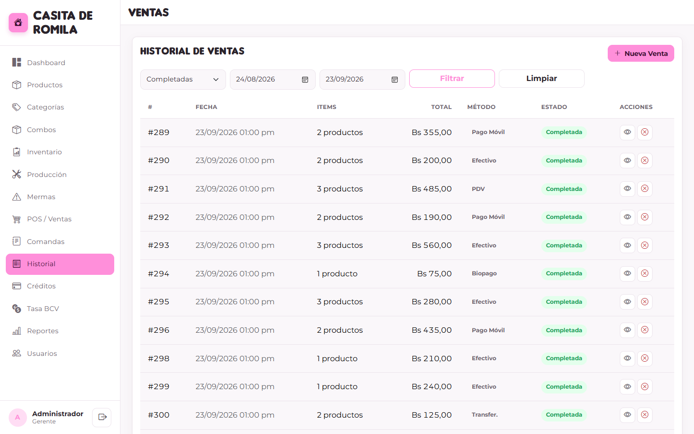
Figura 8. Historial de ventas con filtros por estado y rango de fechas.
Aquí queda el registro de todo lo vendido. Puedes filtrar por estado (Completadas, Pendientes, Anuladas) y por rango de fechas.
Completada: venta cobrada al momento (incluye créditos ya cobrados).
Pendiente: venta a crédito que aún no se cobra.
Anulada: venta cancelada.
6.1 Ver detalle de una venta
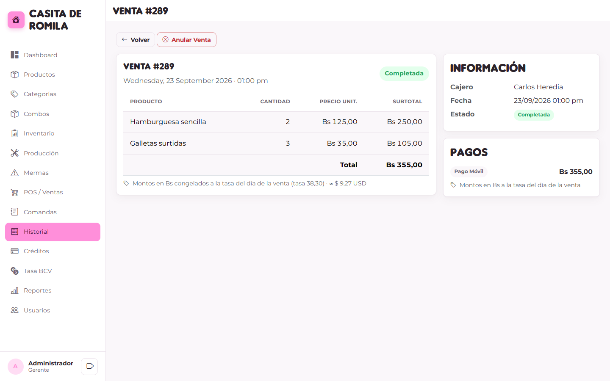
Figura 9. Detalle de una venta con sus productos, método de pago y tasa del día.
Cada venta muestra: número de venta, fecha, método de pago, productos y cantidades, subtotales y total. El monto en Bs es el fijado el día de la venta (no cambia aunque la tasa suba después). El equivalente en USD usa la tasa congelada de ese día.
6.2 Anular una venta
Abre el detalle de la venta.
Pulsa Anular venta (requiere permiso de anular ventas).
Indica el motivo de la anulación.
En una venta a crédito ya cobrada, anularla devuelve el pago: la venta vuelve a quedar pendiente y el saldo del cliente se revierte.
En un crédito sin cobrar, la venta se marca anulada y se hace un abono al cliente por el monto.
7. Productos y categorías
7.1 Listado de productos
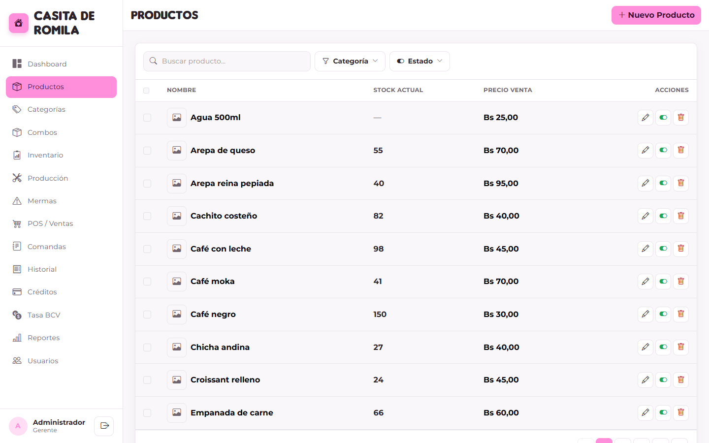
Figura 10. Listado de productos con filtros por nombre, categoría y tipo.
La tabla muestra el precio en USD, el precio en Bs según la tasa vigente y el stock actual (para productos con control de inventario).
Usa el buscador o los filtros de la parte superior para encontrar un producto rápidamente.
El switch de cada fila activa/desactiva el producto (los inactivos no aparecen en el POS).
7.2 Tipos de producto
Tipo
Qué significa
¿Descuenta stock?
Inventariable
Producto que tiene existencias contables (ej. empanadas, refrescos).
Sí, al vender.
Producción
Producto que se fabrica en lotes (ej. panes, tortas). Se registra en el módulo de Producción.
Sí, al vender.
Demanda
Producto que se elabora bajo pedido y no se cuenta en stock (ej. ensaladas, sopas).
No.
7.3 Crear o editar un producto
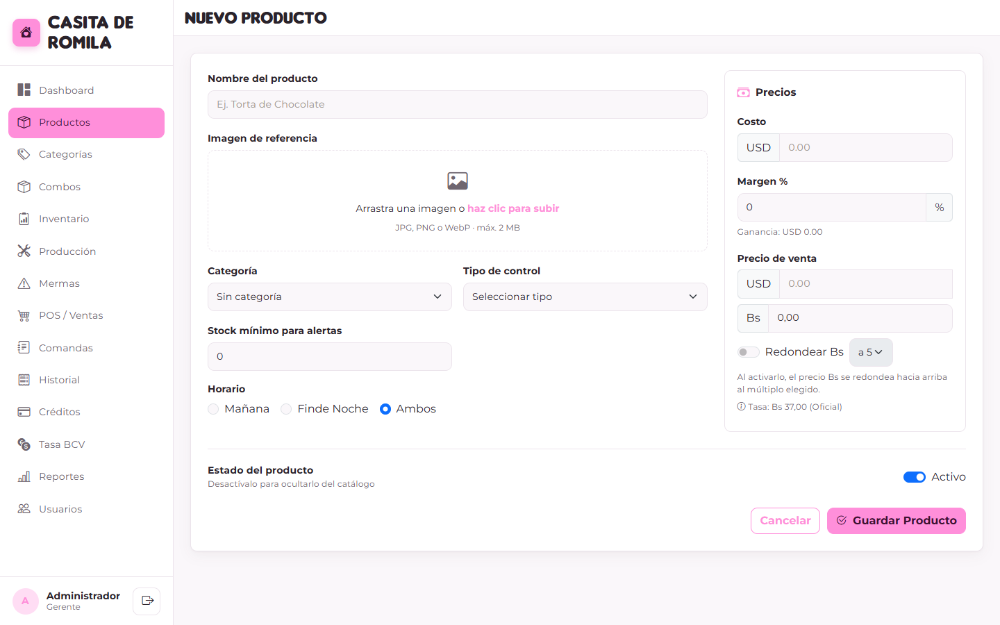
Figura 11. Formulario de producto con la tarjeta de precios.
Pulsa Nuevo producto (o el icono de edición en la fila).
Completa Nombre, Categoría y Tipo.
En la tarjeta de precios escribe el costo en USD y el margen %; el sistema calcula automáticamente el precio de venta en USD y su equivalente en Bs.
Define el redondeo en Bs (5, 10…) para precios redondos, y el stock mínimo para alertas de inventario.
Si activas “Precio manual”, el precio en Bs no se recalcula con la tasa.
Guarda el producto.
La tarjeta de precios se recalcula en ambos sentidos: puedes partir del precio final en Bs y el sistema deduce el margen y el precio en USD.
7.4 Categorías
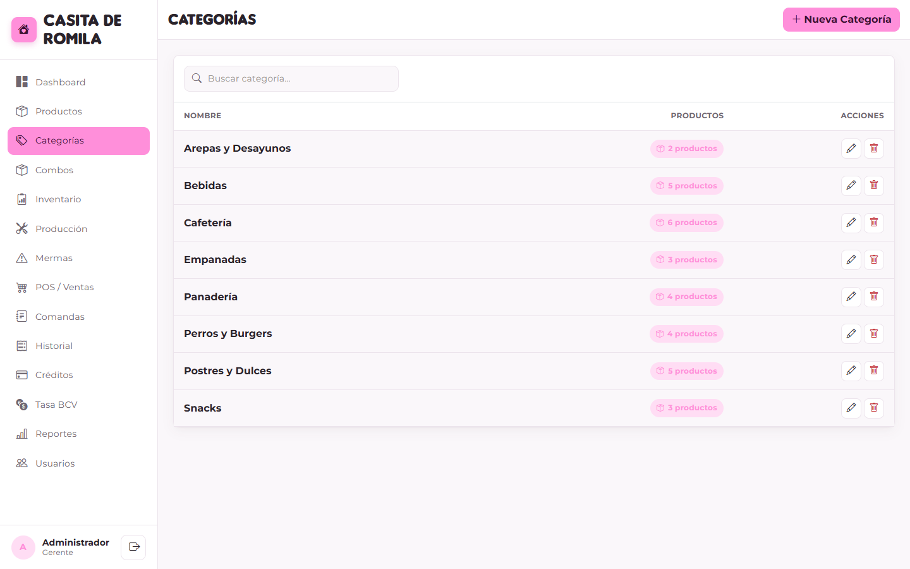
Figura 12. Gestión de categorías.
Desde el menú Categorías puedes agregar, renombrar o eliminar categorías. Son las mismas que aparecen como filtros en el POS y en el listado de productos.
8. Combos
Un combo agrupa varios productos en una sola tarjeta del POS con un precio único (ej. “Perro + Refresco”).
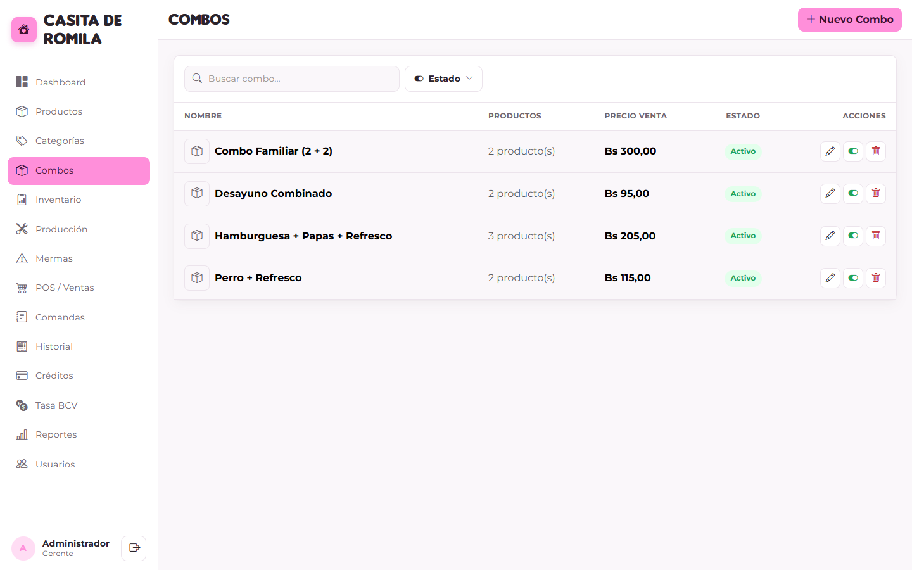
Figura 13. Listado de combos.
8.1 Crear un combo
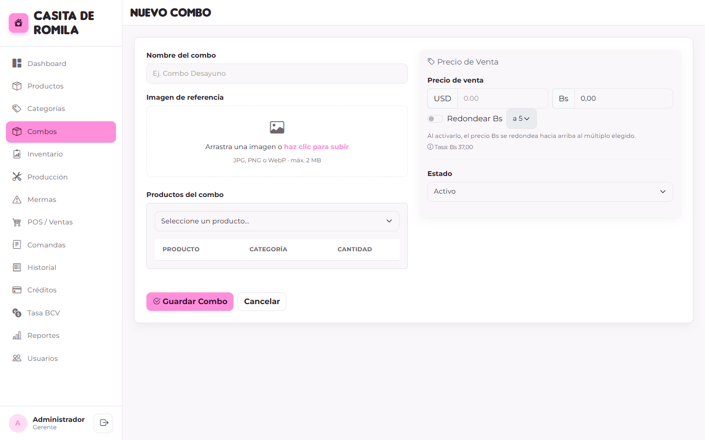
Figura 14. Creación de un combo con sus componentes.
Pulsa Nuevo combo.
Escribe el Nombre (ej. “Combo Familiar 2+2”).
Define el precio en USD y el redondeo en Bs.
Agrega los productos componentes y sus cantidades.
Guarda. El combo aparecerá en el POS con la etiqueta Combo.
Al vender un combo se descuenta el stock de cada componente según su cantidad. Ten los componentes registrados como productos inventariables.
9. Inventario y producción
9.1 Inventario
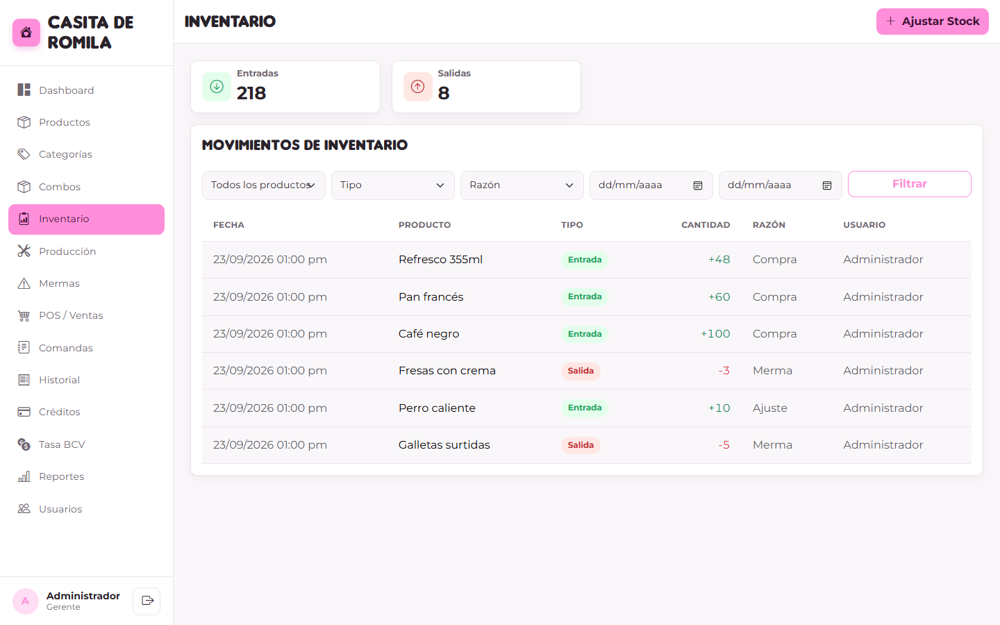
Figura 15. Inventario: existencias, stock mínimo y alertas.
Abre Inventario para ver las existencias de cada producto.
Pulsa Registrar movimiento para:
Entrada (compra, ajuste con aumento, devolución).
Salida (merma, venta manual, ajuste por disminución).
Selecciona cantidad, motivo y una nota opcional .
Las ventas del POS ya descuentan stock automáticamente. El módulo de inventario es para casos puntuales: compras, ajustes, devoluciones y errores.
9.2 Producción
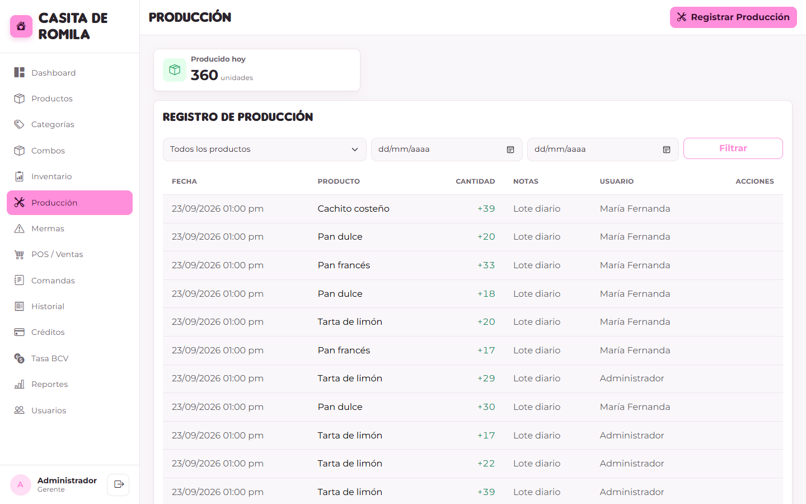
Figura 16. Registro de lotes de producción.
Para productos de tipo Producción registra cada lote elaborado: elige el producto, la cantidad y una nota (ej. “Lote diario”). Estos registros alimentan el reporte Producción vs Ventas.
10. Mermas y consumo interno
Hay dos tipos de salidas de productos que debes registrar para que el inventario y los reportes reflejen la realidad:
Merma: producto que se pierde o daña (vencido, dañado, otro).
Consumo interno: producto que se toma sin venta (lo consume el dueño o el personal, con o sin costo). Se registra con un carrito multilínea y su costo en USD.
10.1 Registrar una merma o consumo
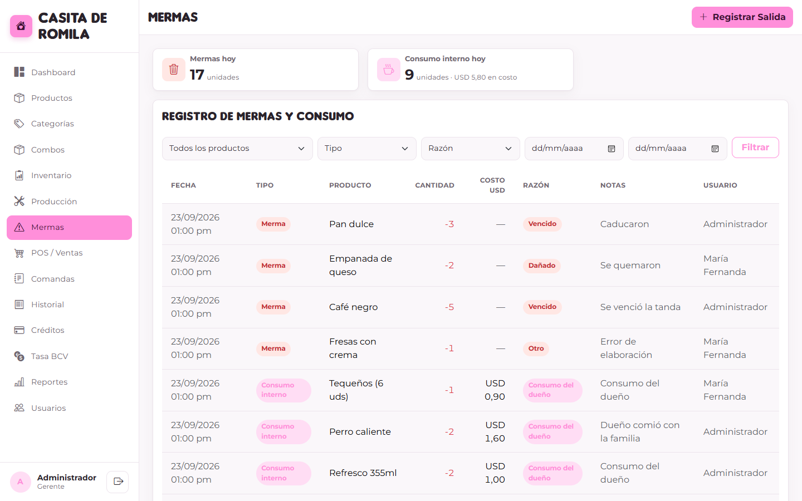
Figura 17. Registro de mermas y consumo con indicador del día.
Abre Mermas.
Pulsa Reportar Merma.
Elige el tipo de salida: Merma o Consumo interno.
Selecciona uno o varios productos con sus cantidades. En consumo interno, indica el costo en USD de cada línea (se precarga con el costo del producto).
Indica la razón (Vencido, Dañado, Otro, Consumo del dueño) y una nota opcional.
Pulsa Registrar Merma (o Registrar Consumo).
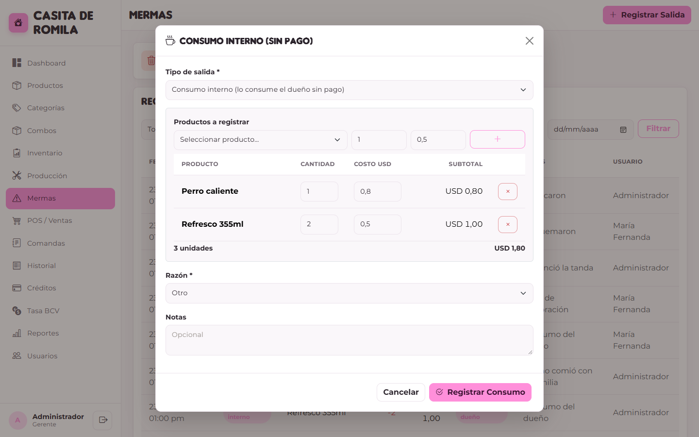
Figura 18. Consumo interno multilínea: varios productos con su costo en USD.
Las mermas descuentan stock. El consumo interno se separa de las mermas en los reportes para no mezclar pérdidas con el producto que se consume en casa.
11. Créditos y clientes
11.1 Registro de clientes y su saldo
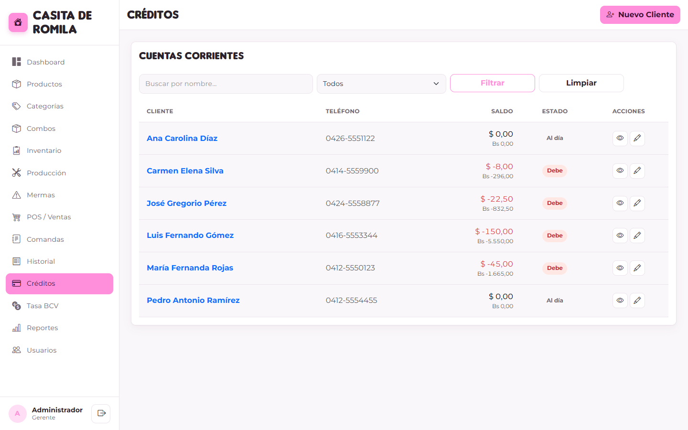
Figura 19. Clientes con deuda y su saldo pendiente.
Desde Créditos puedes registrar un nuevo cliente: nombre, teléfono y, opcionalmente, un límite de crédito (libre o por monto).
El saldo del cliente se muestra en USD: un valor negativo indica deuda.
11.2 Ficha del cliente y cobro del crédito
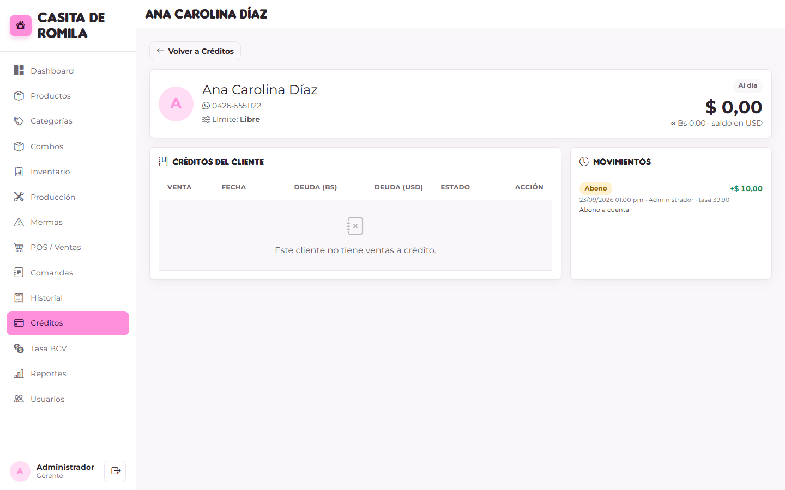
Figura 20. Ficha del cliente: movimientos, deuda en Bs y cobro del crédito.
Abre el cliente para ver su historial de movimientos (cargos de ventas a crédito y abonos).
Pulsa Cobrar para liquidar la deuda: el sistema muestra el monto de la deuda convertido a Bs con la tasa del día.
Selecciona el método de pago real (efectivo, Biopago, etc.) y confirma.
Ingresos = fecha de cobro: una venta a crédito cuenta como ingreso el día en que se cobra, no cuando se hizo. Esa venta aparece como “pendiente” hasta ser cobrada.
12. Tasa de cambio
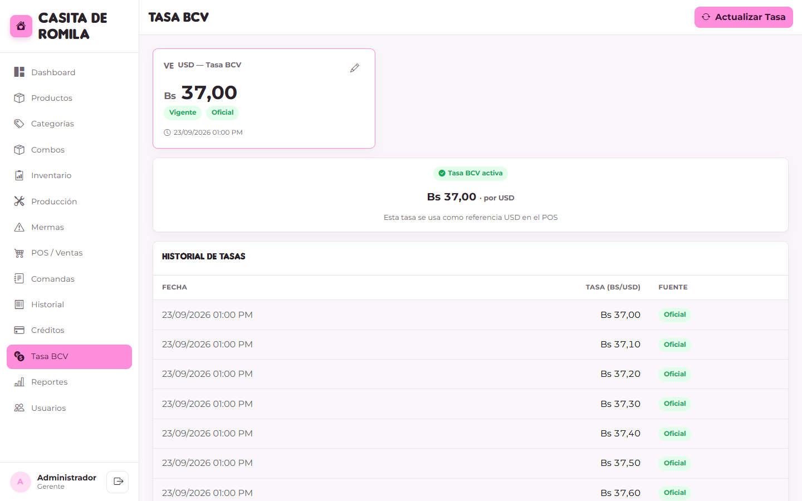
Figura 21. Tasa de cambio vigente e historial reciente.
Consulta la tasa vigente (la más reciente).
Para actualizarla, indica el valor y el origen: BCV, paralelo, Binance, EnZona o manual.
Guarda. A partir de ese momento el POS, inventario y reportes usan la nueva tasa.
Las ventas ya hechas conservan la tasa del día de la venta (tasa congelada). Solo los cálculos nuevos usan la tasa vigente.
13. Reportes
El módulo Reportes reúne estadísticas del negocio. Casi todos permiten filtrar por rango de fechas y descargar en CSV.
13.1 Índice de reportes
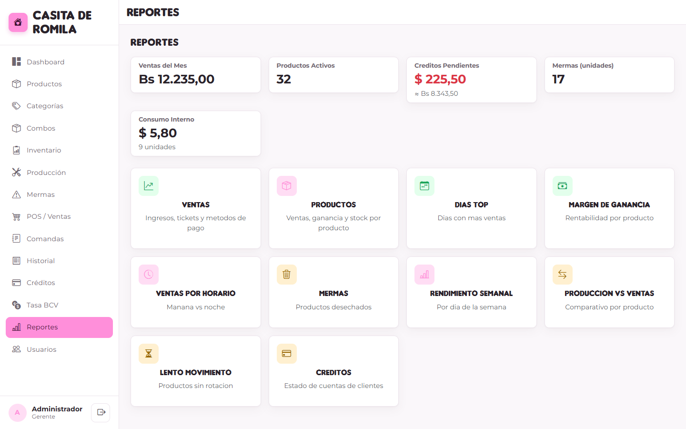
Figura 22. Índice de reportes con accesos a cada informe.
13.2 Reporte de ventas
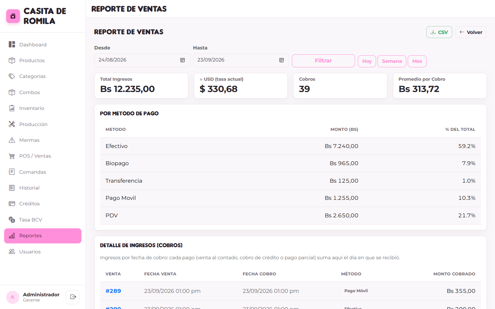
Figura 23. Reporte de ventas: ingresos, cobros y listado por cobro con su método de pago.
Muestra ingresos totales (suma de cobros del período), el equivalente aproximado en USD y el promedio por cobro.
El detalle lista una fila por cobro. Un cobro de crédito aparece con la etiqueta Crédito y el método con el que se pagó.
Los montos en Bs son los del día de cada cobro.
13.3 Reporte de mermas y consumo
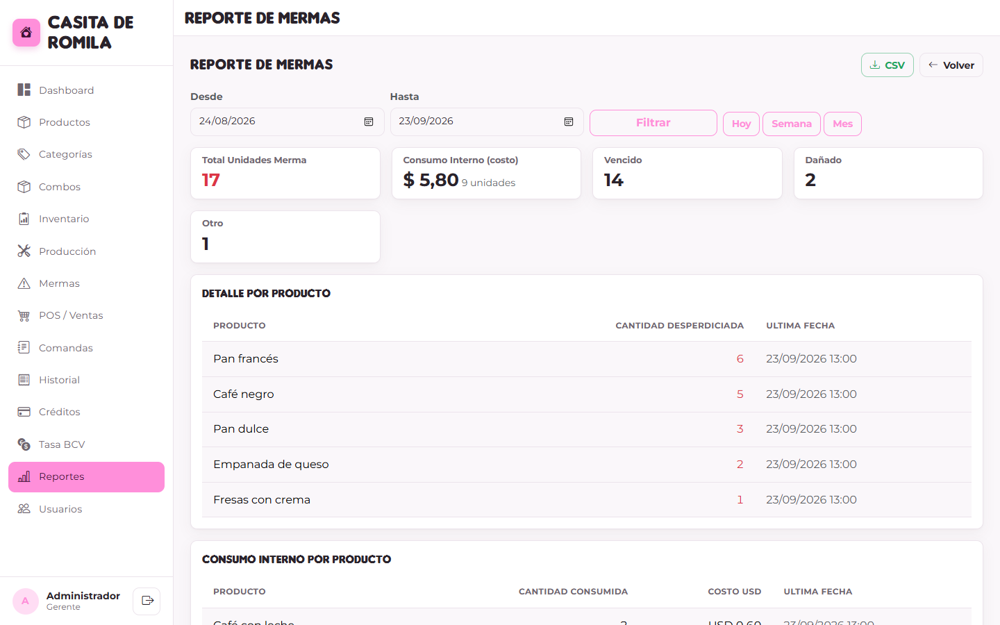
Figura 24. Reporte de mermas con la sección separada de consumo interno y su costo en USD.
El reporte distingue Mermas (pérdidas) de Consumo interno (producto consumido sin venta), con su costo en USD y número de unidades afectadas.
13.4 Producción vs Ventas
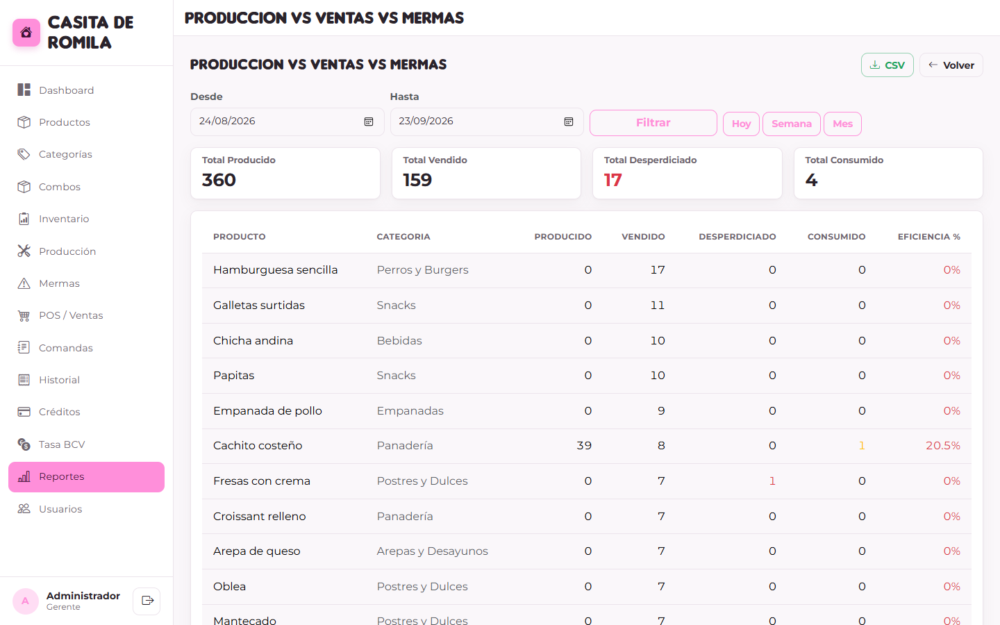
Figura 25. Producción vs Ventas: qué se fabricó, cuánto se vendió y cuánto se consumió.
Compara por producto los lotes producidos, las unidades vendidas y las consumidas internamente. Muy útil para planificar la producción del día siguiente.
13.5 Margen de ganancia y otros
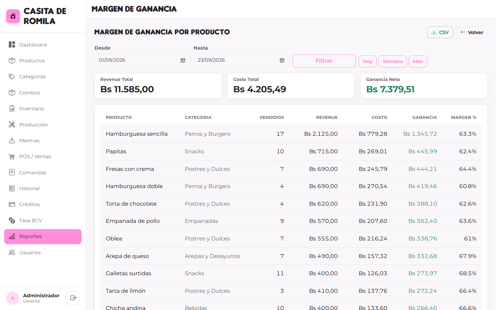
Figura 26. Reporte de margen por producto.
El módulo incluye además: créditos por cliente, mejores días, ventas por horario, productos lentos, desempeño semanal y margen por producto.
14. Usuarios y roles
14.1 Usuarios
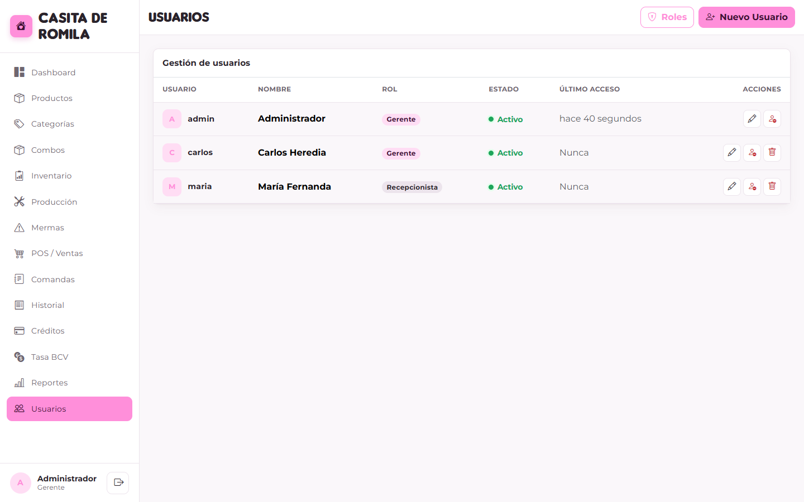
Figura 27. Gestión de usuarios del sistema.
Desde Usuarios pulsa Nuevo usuario.
Indica Nombre, Usuario (nombre de acceso, se guarda en minúsculas), Contraseña y Rol.
Guarda. Puedes activar/desactivar usuarios y cambiarles el rol después.
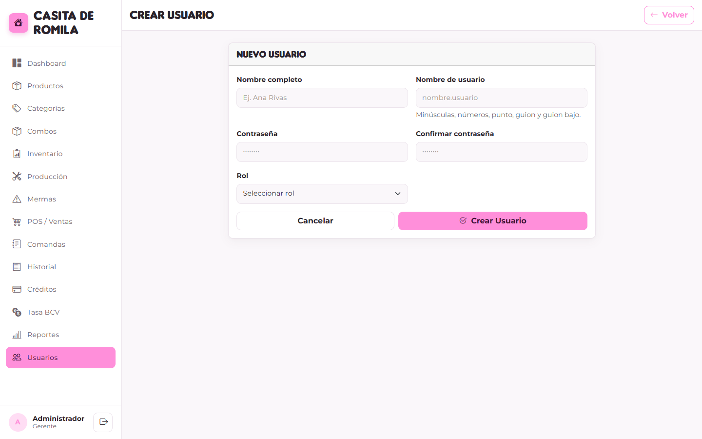
Figura 28. Formulario de nuevo usuario.
14.2 Roles y permisos
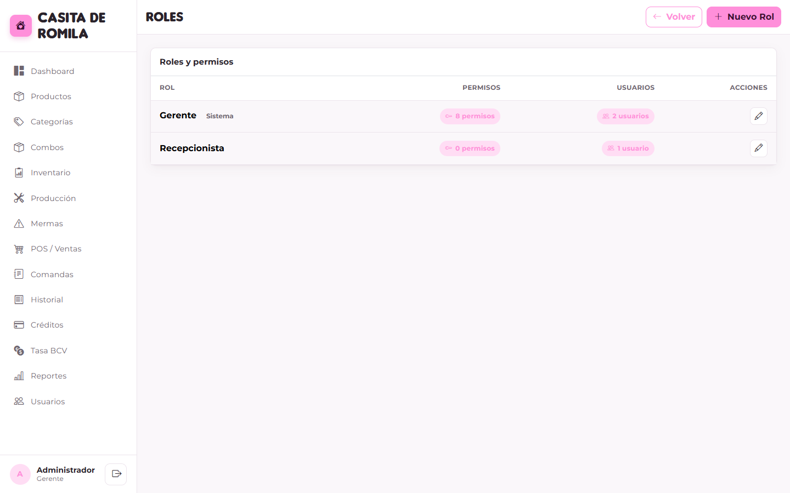
Figura 29. Roles del sistema.
Cada rol agrupa un conjunto de permisos por módulo: productos, inventario, mermas, anular ventas, créditos, tasa de cambio, reportes y usuarios. Al editar un rol marcas o desmarcas las casillas según lo que quieras permitir.
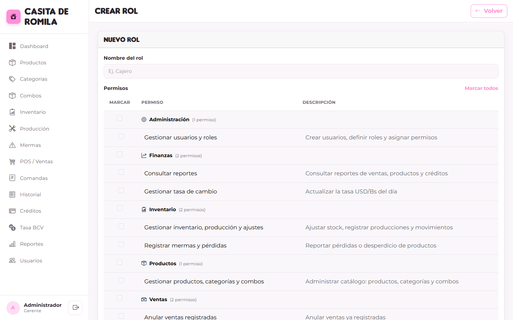
Figura 30. Creación de un rol con permisos por módulo.
El sistema trae dos roles de fábrica: Gerente (todos los permisos, no se puede eliminar) y Recepcionista (ventas, comandas y consulta). Puedes crear más roles según el negocio.
15. Preguntas frecuentes y solución de problemas
¿Por qué el precio en Bs cambia de un día a otro?
Porque se calcula con la tasa de cambio vigente. Si la tasa se actualiza, los precios nuevos cambian. Las ventas ya hechas conservan el valor del día en que se hicieron.
Cometí un error al cobrar, ¿cómo lo corrijo?
Puedes anular la venta desde el detalle de la venta (con permiso). Si fue un crédito cobrado, la anulación devuelve el crédito a pendiente. Para un cobro equivocado en mostrador, lo más usual es anular y volver a cobrar en el POS.
No me deja cobrar porque el stock está en 0
El sistema valida que haya existencias de los productos inventariables. Registra una entrada de inventario (compra o ajuste) o registra la producción del lote antes de cobrar.
Puse mal un cliente en una venta a crédito
Anula la venta (la deuda se revierte) y vuelve a hacerla con el cliente correcto.
Un usuario quedó bloqueado ¿qué hago?
Espera los segundos que indica el mensaje, o el administrador puede comprobar el estado del usuario. El bloqueo es temporal y automático tras 5 intentos fallidos.
¿Cómo saco los datos para la contabilidad?
Usa los reportes. Cada reporte tiene su botón de exportar CSV, que puedes abrir en Excel u otro programa.
La pantalla se quedó “cargando” o no responde
Refresca el navegador (F5).
Si sigue, cierra sesión y vuelve a entrar.
Si el problema continúa en varios equipos, contacta al soporte técnico (ver Manual Técnico).
16. Referencia rápida
Secciones del menú
Opción
Para qué sirve
Dashboard
Resumen del día y accesos rápidos.
POS / Ventas
Cobrar en mostrador.
Comandas
Pedidos a cocina: montar, entregar, cobrar.
Productos / Categorías / Combos
Catálogo del negocio y agrupaciones.
Inventario / Producción
Existencias, movimientos y lotes elaborados.
Mermas
Pérdidas y consumo interno.
Ventas
Historial, detalle y anulación.
Créditos
Clientes con saldo, ventas a crédito y cobros.
Tasa de cambio
Tasa vigente del día.
Reportes
Estadísticas y exportaciones CSV.
Usuarios / Roles
Accesos y permisos del personal.
Estados de una venta
Estado
Significado
Completada
Cobrada al contado o crédito ya cobrado.
Pendiente
Venta a crédito sin cobrar.
Anulada
Cancelada (con motivo).
Estados de una comanda
Estado
Significado
Montada
Pedido armado, esperando preparación.
Entregada
Todas las unidades entregadas, listo para cobrar (no aplica a delivery).
Cobrada
Cobrada: generó una venta real.
Métodos de pago
Efectivo · Biopago · Pago Móvil · PDV · Crédito.
Manual de Usuario — Casita de Romila v1.0 · Septiembre 2026